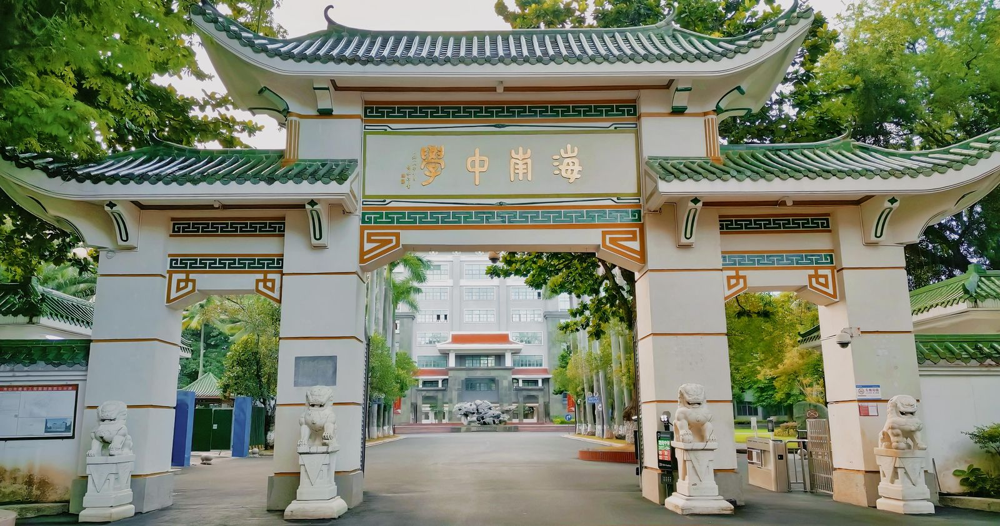

先认识校园
浏览学校历史、空间手图与校园影像，再进入第一人称漫游。
打开校园手图 ↗05A FIRST VISIT
招生政策、名额、分数与报名时间，请以学校及教育主管部门的当期正式公告为准。本站提供一份认识校园的来访手记。

FUCHENG CAMPUS / HAIKOU06QUESTIONS, ANSWERED.
不是。本站是非官方数字校园创作项目，不发布具体招生计划、名额、录取分数线或报名规则。
社团名称与活动均为创作提案，没有真实报名或排期。请向校内正式社团与指导老师了解活动安排。
可以。四栋教学楼首层共开放16间想象教室，支持桌面和手机行走。它们不代表实际教室的内部布置。
请查看海南中学官方网站以及学校、教育主管部门正式发布的公告；历史报道可在新闻档案中按来源追溯。